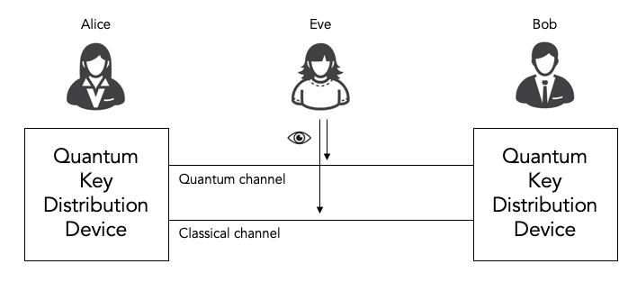

In the BB84 quantum key distribution protocol, Alice and Bob establish a secure key by transmitting qubits and measuring them in randomly chosen bases (Z or X). After the transmission, they compare their chosen bases over a public, authenticated channel without revealing the actual measurement results. Only qubits where their bases match are retained for the key. To detect eavesdropping, they reveal a subset of the matching qubits and compare their values. If Alice and Bob used the same basis (e.g., Z-basis), but their results differ (e.g., Alice sent 0, but Bob measured 1), they can infer that an eavesdropper (Eve) has interfered, as Eve's random basis guesses would disturb the quantum states and introduce detectable errors. This process ensures the security of the final key and the detection of any unauthorized interception.
adding picutre
The BB84 quantum key distribution (QKD) protocol allows two parties (Alice and Bob) to establish a shared secret key securely using quantum mechanics. Let's break down the content of the image step by step to understand the basics:
-
Key Strings:
- Alice starts with two binary strings, a and b , each of length n . These strings are random.
- The string a determines the bit values (0 or 1) Alice wants to send.
- The string b determines the basis (how the bits will be encoded) for each qubit.
-
Encoding Qubits:
- Alice encodes her bits a_i and bases b_i into quantum states. For each bit, she prepares a qubit \lvert \psi_{a_i b_i} \rangle, where:
- a_i is the i -th bit of a (0 or 1).
- b_i is the i -th bit of b (0 or 1).
- Alice encodes her bits a_i and bases b_i into quantum states. For each bit, she prepares a qubit \lvert \psi_{a_i b_i} \rangle, where:
-
Quantum States:
-
Based on a_i and b_i , Alice uses the following encoding:
- \lvert \psi _{00}\rangle: \lvert 0\rangle — A qubit in the Z-basis representing 0.
- \lvert \psi _{10}\rangle: \lvert 1\rangle — A qubit in the Z-basis representing 1.
- \lvert \psi _{01}\rangle: \lvert+\rangle = \frac{1}{\sqrt{2}}(\lvert0\rangle + \lvert1\rangle) — A qubit in the X-basis representing 0.
- \lvert \psi _{11}\rangle: \lvert-\rangle = \frac{1}{\sqrt{2}}(\lvert0\rangle - \lvert1\rangle) — A qubit in the X-basis representing 1.
-
The Z-basis (rectilinear basis) consists of \lvert 0\rangle and \lvert 1\rangle.
- The X-basis (diagonal basis) consists of \lvert +\rangle and \lvert -\rangle.
-
-
Tensor Product:
-
Alice prepares a sequence of n qubits, each encoded using the tensor product formula:
\lvert \psi \rangle = \bigotimes_{i=1}^n \lvert \psi _{a_i b_i}\rangle
This means she sends a combined quantum state of all n qubits, where each qubit is independently encoded.
-
-
Purpose:
- Bob measures each qubit in a randomly chosen basis (Z-basis or X-basis).
- If Bob's measurement basis matches Alice's encoding basis ( b_i ), the measurement result will match a_i perfectly.
- If the bases don't match, Bob's measurement result will be random and provide no useful information.
-
Key Extraction:
- After sending and measuring, Alice and Bob compare their bases ( b ) over a public channel.
- They discard the results where their bases don't match, leaving a shorter string of bits that they use as the secret key.
The security of BB84 relies on the principles of quantum mechanics:
- Any attempt by an eavesdropper (Eve) to intercept or measure the qubits introduces detectable disturbances in the system.
- This ensures the integrity of the communication between Alice and Bob.
Great question! The reason I didn't initially consider a_1 = 0 or b_2 = 0 is because the example explicitly set a = 10 and b = 01 . However, you're absolutely correct that we could (and should) consider all possible cases of a_i and b_i when n = 2 , to explore the full set of scenarios.
Let's now revisit the problem and explicitly calculate the tensor product for all combinations of a_1, a_2 and b_1, b_2 ,instead of just one specific example.
All Possible Cases for n = 2 : General Expansion
For n = 2 , we have two bits a = a_1a_2 and b = b_1b_2 . Each qubit state \lvert \psi_{a_i b_i}\rangle is determined as follows:
-
If b_i = 0 (Z-basis):
- a_i = 0 : \lvert \psi _{a_i b_i}\rangle = \lvert0\rangle
- a_i = 1 : \lvert \psi _{a_i b_i}\rangle = \lvert1\rangle
-
If b_i = 1 (X-basis):
- a_i = 0 : \lvert \psi \rangle_{a_i b_i}\rangle = \lvert+\rangle = \frac{1}{\sqrt{2}}(\lvert0\rangle + \lvert1\rangle)
- a_i = 1 : \lvert \psi \rangle_{a_i b_i}\rangle = \lvert-\rangle = \frac{1}{\sqrt{2}}(\lvert0\rangle - \lvert1\rangle)
Explicit Calculation of Tensor Products
We calculate the tensor product for one full combination as an example, but the method applies to all cases.
Example: a = 00, b = 00
- a_1 = 0, b_1 = 0 : \lvert \psi \rangle_{a_1 b_1}\rangle = \lvert0\rangle
- a_2 = 0, b_2 = 0 : \lvert \psi \rangle_{a_2 b_2}\rangle = \lvert0\rangle
The total state:
Example: a = 01, b = 01
- a_1 = 0, b_1 = 0 : \lvert \psi_{a_1 b_1}\rangle = \lvert0\rangle
- a_2 = 1, b_2 = 1 : \lvert \psi_{a_2 b_2}\rangle = \lvert-\rangle = \frac{1}{\sqrt{2}}(\lvert0\rangle - \lvert1\rangle)
The total state:
Expand the tensor product:
Example: a = 10, b = 10
- a_1 = 1, b_1 = 1 : \lvert \psi _{a_1 b_1}\rangle = \lvert-\rangle = \frac{1}{\sqrt{2}}(\lvert0\rangle - \lvert1\rangle)
- a_2 = 0, b_2 = 0 : \lvert \psi _{a_2 b_2}\rangle = \lvert0\rangle
The total state:
Expand the tensor product:
General Formula
For n = 2 , the state \lvert \psi \rangle\rangle is given by:
where each $\lvert \psi_{a_i b_i}\rangle depends on the values of a_i and b_i as:
- b_i = 0 : \lvert \psi_{a_i b_i}\rangle = \lvert a_i\rangle (Z-basis).
- b_i = 1 : \lvert \psi_{a_i b_i}\rangle = \frac{1}{\sqrt{2}}(\lvert0\rangle + (-1)^{a_i}\lvert1\rangle) (X-basis).
Base shifting
What is Basis Shifting?
Basis shifting refers to changing the representation or measurement basis of a quantum state. In quantum mechanics, qubits are often represented and measured in different bases. The two most commonly used bases are:
-
Z-basis (Computational Basis):
- States: (\lvert 0\rangle, \lvert 1\rangle).
- This is the "classical" binary basis used for encoding and measuring.
-
X-basis (Diagonal Basis):
- \lvert - \rangle = \frac{\lvert 0 \rangle - \lvert 1 \rangle}{\sqrt{2}}
- \lvert + \rangle = \frac{\lvert 0 \rangle + \lvert 1 \rangle}{\sqrt{2}}
- This basis involves superpositions of the Z-basis states.
Basis shifting occurs when:
- A quantum state encoded in one basis is measured in another basis.
- A qubit is deliberately transformed from one basis to another using quantum gates (like the Hadamard gate).
How Does Basis Shifting Happen?
In the BB84 protocol, basis shifting happens due to the random choice of encoding and measurement bases by Alice and Bob:
-
Alice's Encoding:
- Alice randomly encodes each qubit in either the Z-basis or X-basis:
- b_i = 0: Z-basis (\lvert 0\rangle, \lvert 1\rangle).
- b_i = 1: Z-basis (\lvert +\rangle, \lvert -\rangle).
- Example: If a_i = 1, b_i = 0, she encodes \lvert 1 \rangle. If a_i = 1, b_i = 1 , she encodes \lvert-\rangle.
- Alice randomly encodes each qubit in either the Z-basis or X-basis:
-
Bob's Measurement:
- Bob randomly chooses to measure each qubit in either the Z-basis or X-basis.
- If Bob's measurement basis matches Alice's encoding basis, the result is correct.
- If Bob's measurement basis doesn't match, the result is random.
Detecting Eavesdropping with Basis Shifting
The BB84 protocol uses basis shifting to detect the presence of an eavesdropper (Eve). Here's how it works:
-
Eve's Interception:
- Eve tries to intercept and measure the qubits in transit from Alice to Bob.
- Since Eve doesn't know Alice's encoding basis, she must randomly choose a measurement basis (Z or X) for each qubit.
-
Eve's Disturbance:
- If Eve measures in the wrong basis (e.g., measures a qubit encoded in the X-basis using the Z-basis), her measurement collapses the quantum state.
- When the qubit is sent to Bob, it no longer matches Alice's original encoding.
-
Key Verification:
- After Bob measures the qubits, Alice and Bob publicly compare the bases they used (but not the actual measurement results).
- They discard any qubits where their bases didn't match.
- For the remaining qubits (where their bases matched), they compare a subset of their measurement results over a public channel.
-
Error Detection:
- If there's no eavesdropping, Bob's measurements will match Alice's encoding perfectly (no errors).
- If Eve intercepted the qubits, her random measurements will introduce detectable errors in the shared key.
Example of Eavesdropping Detection
Let's consider an example where n = 3:
Without Eavesdropping:
- Alice's Encoding:
- Alice sends: \lvert 0\rangle, \lvert +\rangle, \lvert 1\rangle (bases: Z, X, Z).
- Bob's Measurement:
- Bob measures in the same bases: Z, X, Z.
- Results: Bob gets the correct key: 0, 0, 1.
With Eavesdropping:
- Eve's Interception:
- Eve intercepts and randomly measures the qubits in bases: X, Z, X.
- She collapses the qubits into new states: \lvert +\rangle, \lvert 1\rangle, \lvert +\rangle.
- Bob's Measurement:
- Bob measures in bases: Z, X, Z.
- Results: Errors occur because Eve altered the quantum states.
Detection:
- Alice and Bob compare the results of a subset of their key bits where their bases matched.
- If Eve intercepted, the error rate will be higher than expected, signaling eavesdropping.
Key Takeaways
-
Why Basis Shifting Works for Security:
- Quantum states collapse when measured in the wrong basis.
- This collapse introduces detectable errors if an eavesdropper tries to intercept.
-
How Alice and Bob Detect Eavesdropping:
- They use random basis shifting (Z-basis and X-basis) to encode and measure.
- Any tampering causes mismatches in their measurement results.
Q & A
Q1. Isn't Bob and Eve face the same challenge: they don't knew the encoding basis Alice used?
A: Correct!: they don't know the encoding basis Alice used. However, the key distinction lies in how Bob and Eve's actions affect the quantum states. Here's a step-by-step explanation of how Bob and Alice can detect errors introduced by Eve:
Key Differences Between Bob and Eve's Roles
-
Bob's Role:
- Bob is a legitimate participant in the protocol.
- He doesn't need to know Alice's encoding basis in real-time because they later publicly compare their chosen bases after Bob measures the qubits.
- Bob's measurements are a normal part of the protocol and do not disturb the quantum state if his basis matches Alice's.
-
Eve's Role:
- Eve is an eavesdropper who intercepts the qubits mid-transmission.
- Eve cannot communicate with Alice and Bob, so she must guess Alice's encoding basis (Z or X) for each qubit. This guess introduces errors because her measurement collapses the quantum state when she measures in the wrong basis.
How Errors Are Introduced by Eve
-
Eve Intercepts and Measures:
- Eve measures each qubit in a random basis (Z or X). If her basis matches Alice's, she correctly measures the state. If not, her measurement collapses the state into a new random value in the wrong basis.
-
Eve Resends the Qubit:
- After measuring, Eve resends the qubit to Bob. However, the qubit's state is now modified based on her measurement, not Alice's original encoding.
-
Bob's Measurement:
- Bob measures the qubit as usual, but if the qubit was altered by Eve, the likelihood of Bob's result matching Alice's original encoding is reduced.
Error Detection Process
Alice and Bob detect the errors introduced by Eve as follows:
-
Key Exchange:
- Alice and Bob exchange qubits, with Alice encoding in random bases (Z or X) and Bob measuring in random bases.
-
Basis Comparison:
- After transmission, Alice and Bob publicly compare their bases (but not their measurement results).
- They discard any qubits where their bases don't match. For example:
- Alice encodes in Z, Bob measures in Z → Keep.
- Alice encodes in X, Bob measures in Z → Discard.
-
Sample Check:
- For the remaining qubits (where bases matched), Alice and Bob publicly reveal the measurement results for a small subset of the key.
- If there is no eavesdropping, the results will match perfectly.
- If Eve intercepted, her random basis choices introduce detectable mismatches in the sample subset.
Why Bob Can Detect Errors
- Bob and Alice know the bases they used after they compare them.
- Errors introduced by Eve create discrepancies in the results for the cases where Alice and Bob used the same basis.
- Since Eve doesn't know Alice's basis when she measures, her interference causes errors in the subset of qubits Alice and Bob verify.
Example
Without Eavesdropping:
- Alice sends qubits:
- \lvert 0\rangle (Z-basis), \lvert +\rangle (X-basis), \lvert 1\rangle (Z-basis).
- Bob measures:
- Z-basis: \lvert 0\rangle → Correct.
- X-basis: \lvert +\rangle → Correct.
- Z-basis: \lvert 1\rangle → Correct.
- Sample check:
- All results match, so no errors.
With Eavesdropping:
- Eve intercepts and measures randomly:
- Eve measures \lvert 0\rangle in X-basis → Collapses to \lvert +\rangle or \lvert -\rangle.
- Eve measures \lvert +\rangle in Z-basis → Collapses to \lvert 0\rangle or \lvert 1\rangle.
- Eve measures \lvert 1\rangle in X-basis → Collapses to \lvert +\rangle or \lvert -\rangle.
- Eve resends the altered qubits to Bob:
- Bob's measurements may now mismatch Alice's original encoding.
- Sample check:
- Alice and Bob detect errors in the subset of qubits they verify.
Error Rates and Eavesdropping Detection
If Eve intercepts and measures every qubit: - She guesses the correct basis with 50% probability for each qubit. - When she guesses incorrectly, the transmitted qubit is altered, introducing errors. - If Alice and Bob observe an error rate higher than the expected random noise level (e.g., from equipment imperfections), they conclude that an eavesdropper is present.
Conclusion
While Bob and Eve face the same initial uncertainty about Alice's encoding basis, the protocol structure ensures: - Bob's measurements don't introduce errors if his basis matches Alice's. - Eve's random basis guesses introduce detectable errors into the key. This is how basis shifting helps detect eavesdropping in quantum key distribution protocols like BB84.
Q2 what is a normal part of the protocol?
The reason why the "normal" part of the BB84 protocol (or any quantum key distribution protocol) does not disturb the quantum state lies in quantum mechanics and the design of the protocol. Let's break this down:
1. Quantum Measurement Only Disturbs the State if the Basis is Incorrect
In quantum mechanics: - A qubit is represented in a specific basis (e.g., the Z-basis or X-basis). - If a qubit is measured in the same basis in which it was prepared, the measurement process does not disturb the state. The qubit "collapses" to the same state it was initially in, and the measurement result is consistent with the encoding.
Example: - Alice sends a qubit in the Z-basis: - \lvert 0\rangle: If Bob measures in the Z-basis, the result is 0 and the state is not disturbed. - \lvert 1\rangle: If Bob measures in the Z-basis, the result is 1 and the state is not disturbed.
However: - If Bob measures in a different basis (e.g., the X-basis), the quantum state is projected onto the X-basis ( \lvert+\rangle, \lvert-\rangle ). This projection collapses the original state into a new state, introducing randomness and effectively "disturbing" the original quantum information.
2. Bob's Random Measurement Does Not Always Disturb the State
In the BB84 protocol: - Bob measures each qubit in a randomly chosen basis (Z or X). - If Bob happens to measure in the same basis that Alice used to prepare the qubit, the measurement does not disturb the state. - If Bob measures in the wrong basis, the state collapses to a random outcome in the measurement basis.
Example: - Alice sends \lvert +\rangle (prepared in the X-basis). - If Bob measures in the X-basis, he gets the correct result + , and the state remains \lvert +\rangle. - If Bob measures in the Z-basis, he gets a random result ( 0 or 1 ), and the state is disturbed.
The randomness of Bob's measurement is an intentional part of the protocol design. Any mismatches in basis are discarded later during basis comparison, ensuring that only measurements in the correct basis contribute to the final key.
3. Eve's Measurement Always Disturbs the State
Eve, unlike Bob, introduces detectable disturbances because: 1. Eve Measures First: - Eve measures the qubit in a random basis (Z or X), collapsing the quantum state to one consistent with her chosen basis. 2. Eve Sends a New State: - After measurement, Eve prepares and sends a new qubit to Bob. If her basis matches Alice's, the state sent to Bob will be correct. - If her basis doesn't match Alice's, the state sent to Bob is incorrect, introducing detectable errors.
Key Difference: - Bob's basis is publicly compared with Alice's after measurement, so mismatches can be discarded. - Eve's interference affects the quantum states, even when Alice and Bob's bases match, introducing measurable errors.
4. Why the Protocol Design Prevents State Disturbance
The BB84 protocol minimizes disturbance as part of its design: 1. Basis Matching: - Alice and Bob only use qubits where their preparation and measurement bases matched (e.g., both Z-basis or both X-basis). This ensures the key bits come from undisturbed quantum states.
- Basis Comparison and Key Reconciliation:
-
The basis comparison step allows Alice and Bob to identify mismatches and discard them. Any remaining bits are guaranteed to have been measured without disturbance.
-
Eavesdropping Detection:
- Eve's measurement in the wrong basis introduces detectable errors when Alice and Bob compare a sample of their results. These errors reveal Eve's presence.
5. Real-World Noise and Error Correction
In real implementations, noise in the quantum channel (e.g., photon loss, environmental disturbances) may introduce small errors even without an eavesdropper. These errors are mitigated using: 1. Error Correction: - Alice and Bob reconcile their keys to correct errors caused by noise. 2. Privacy Amplification: - They apply mathematical techniques to distill a shorter, perfectly secure key from the reconciled key, even in the presence of small errors.
Summary
- Bob's measurements in the correct basis do not disturb the quantum state because the state collapses to the same value as it was prepared in.
- Mismatched bases are part of the protocol's design and are discarded later during basis comparison.
- Eve's interference is detectable because her random measurements disturb the state in a way that creates errors, even when Alice and Bob's bases match.
Q3 So Bob doesn't know the basis Alice used before he measure it?
Exactly! Bob cannot know the basis Alice used to prepare the qubit before he measures it. This is a fundamental aspect of quantum mechanics and the BB84 protocol design. Here's why and how it works:
1. Why Bob Cannot Know the Basis Before Measuring
In quantum mechanics: 1. A qubit doesn't "carry" classical information about the basis in which it was prepared. Instead, it exists as a quantum state. 2. To extract information from a quantum state, Bob must perform a measurement. The result of this measurement depends on the basis he chooses.
If Bob measures in the wrong basis:
- The qubit's state will collapse to a random value in the chosen basis, and the original information will be lost.
Example:
- Alice prepares \lvert +\rangle (X-basis).
- If Bob measures in the Z-basis, he gets \lvert 0\rangle or \lvert 1\rangle randomly, with equal probabilities.
2. How Bob Chooses a Basis
In the BB84 protocol: 1. Random Choice: - Bob chooses a measurement basis (Z or X) randomly for each qubit. - He doesn't know if his choice matches Alice's basis until they compare later.
- After Measurement:
- Bob records both his measurement result and the basis he used (e.g., "Measured 1 in the Z-basis").
- The result may or may not match Alice's encoded value, depending on whether his basis matches hers.
3. Basis Matching in the BB84 Protocol
After Bob measures all the qubits: 1. Classical Communication: - Alice and Bob communicate over a public, authenticated channel to compare their bases for each qubit. - They do not reveal the measurement results or the original values encoded.
- Discarding Mismatches:
- If Bob's basis matches Alice's basis for a given qubit, the measurement result is retained as part of the key.
- If the bases don't match, the result is discarded because it's unreliable.
Example:
4. Why This Ensures Security
The inability of Bob (or anyone) to know the basis before measurement is what makes the BB84 protocol secure: 1. Eve's Challenge: - Eve, like Bob, doesn't know Alice's basis. If she tries to measure the qubits, her random basis choices will disturb the quantum states, introducing errors detectable by Alice and Bob.
-
Legitimate Measurement:
- Bob's random basis choices don't introduce errors because mismatched measurements are discarded during basis comparison.
-
Quantum Uncertainty:
- The quantum no-cloning theorem prevents Eve from perfectly copying the qubit to measure it in both bases. This ensures that any eavesdropping attempt disturbs the quantum state and is detectable.
5. What Happens if Bob Always Used a Single Basis?
If Bob only used one basis (e.g., always Z or always X):
- He would miss half of Alice's qubits prepared in the other basis.
- Eve could exploit this by always measuring in the same basis as Bob, reducing her detection risk.
- Randomly choosing the measurement basis ensures that mismatches with Alice's encoding are spread out, making Eve's presence detectable.
Key Takeaways
- Bob cannot know the basis Alice used to prepare a qubit before he measures it. He chooses his basis randomly.
- After measurement, Alice and Bob publicly compare their bases and discard mismatches.
- This randomness is essential for the security of the BB84 protocol, as it ensures that any eavesdropping attempt by Eve introduces detectable errors.
Q4 Can Eve copy the message and measure it later?
A: No, Eve cannot be in possession of a copy of the qubits sent to Bob, by the no-cloning theorem, unless she has made measurements. The no-cloning theorem is a fundamental principle in quantum mechanics that states it is impossible to create an exact copy of an arbitrary unknown quantum state. This is a cornerstone of the security in quantum key distribution protocols like BB84.
If Eve Tries to Copy:
- Suppose Eve tries to create a copy of the qubit before deciding how to proceed.
- The no-cloning theorem prevents her from duplicating the quantum state. As a result, she cannot keep one copy and forward another to Bob without disturbing the original state.
Example
Suppose Alice sends a qubit \lvert+\rangle = \frac{1}{\sqrt{2}}(\lvert0\rangle + \lvert1\rangle):
- Eve intercepts the qubit and wants to copy it.
- The no-cloning theorem prevents her from creating a second \lvert+\rangle qubit.
- If she measures \lvert+\rangle in the Z-basis, the qubit collapses to \lvert0\rangle or \lvert1\rangle, destroying the original \lvert+\rangle state.
- When Bob measures the forwarded qubit in the correct X-basis, the result will not match Alice's original encoding, introducing detectable errors.
Summary
The no-cloning theorem ensures that an eavesdropper (Eve) cannot copy quantum states sent by Alice to Bob. This prevents Eve from duplicating qubits to analyze later while sending identical ones to Bob. Any attempt by Eve to measure the qubits introduces disturbances, creating detectable errors when Alice and Bob compare their results. This makes quantum key distribution protocols like BB84 fundamentally secure. Let me know if you'd like further clarification!
After Alice and Bob determine that the lundisclosed key elements have an error rate e and that a potential eavesdropper (Eve) may have acquired up to I_E bits of information about the key, they proceed with key distillation. This involves two main steps: error correction and privacy amplification. In error correction, Alice and Bob reconcile their keys using classical communication to ensure they hold identical keys, correcting any discrepancies due to noise or eavesdropping. Following this, privacy amplification reduces Eve's knowledge of the key to negligible levels by hashing the reconciled key into a shorter, secure final key. These steps ensure that even if Eve intercepted some information, the final key shared by Alice and Bob is both secret and error-free.
Error Correction
Error correction in quantum key distribution (QKD) ensures that Alice and Bob hold identical keys by detecting and correcting discrepancies caused by noise in the quantum channel or eavesdropping attempts. After comparing their measurement bases, Alice and Bob identify the bits where they used the same basis but may still have mismatches due to channel imperfections or interference. They use classical communication protocols, such as parity checks or advanced error-correcting codes like the Cascade protocol, to reconcile their keys without revealing the entire key. Error correction ensures that both parties share an identical key, forming the basis for further secure key distillation steps.
 resource: Cascade-python
{kind=link}
Privacy Amplification
Privacy amplification is the process of reducing an eavesdropper's potential knowledge of the shared key to a negligible level. After error correction, Alice and Bob assume that a potential eavesdropper (Eve) has partial information about the reconciled key due to intercepted qubits or classical leakage during error correction. To counter this, they use a publicly agreed hash function to compress the reconciled key into a shorter, final key. This hashing process eliminates any correlations between the final key and Eve's information, ensuring the shared key remains secure for cryptographic purposes.
The price to pay for privacy amplification to work is that the output (secret) key must be smaller than the input (partially secret) key. The reduction in size is roughly equal to the number of bits known to Eve, and the resulting key size is thus l − IE − |M| bits. To maximize the key length and perhaps to avoid Eve knowing everything about the key (e.g., l − IE − |M| = 0), it is important that the reconciliation discloses as little information as possible, just enough to make Alice and Bob able to correct all their errors.
- For instance, they can statistically estimate that Eve knows no more than, say, IE bits on the l key elements
- with |M| the number of parity bits disclosed during the reconciliation.
- l undisclosed key elements